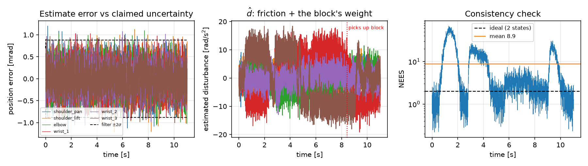
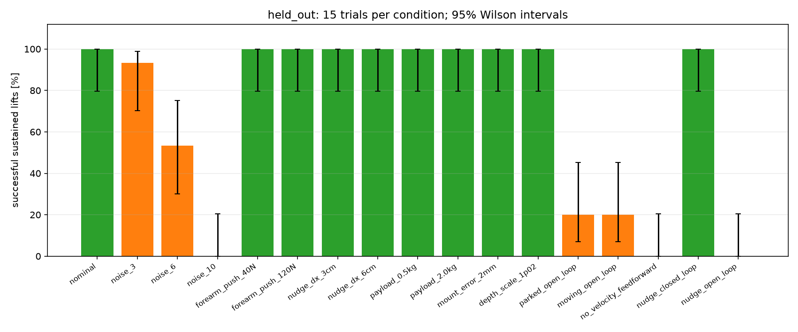

Pranava · Ryan | University of Technology Sydney | Simulation study
One integrated sensing-to-control pipeline
Locate a randomised target, infer motion that the sensors do not directly measure, then align, grasp and hold it using motor torques.
The wrist RGB-D camera supplies object pose observations. Position encoders supply joint angles. Observers estimate joint velocity, disturbance acceleration and target velocity. Position-based visual servoing (PBVS) updates the approach; computed torque with LQR tracks joint references. Simulator truth is reserved for evaluation, apart from the declared idealised conveyor and disturbance generation.
Open the video on YouTube. The corrected presentation uses final held-out figures and labels retained earlier-revision demonstration clips. Those clips illustrate the task; final contact-and-hold verification is recorded in the studies below.
Model, sense, estimate, control
A · Robot model
The 12-state local arm model contains six angles and six velocities. PBH controllability and observability checks both give 12/12 at the operating point. A local perturbation check tests the approximation; this is not a global proof under contact or saturation.
B · Camera calibration
Checkerboard intrinsics and hand-eye calibration use 24 fitting views and six held-out views. Solver selection uses training scatter only. Held-out reprojection RMS is 0.074 px and board-scatter RMS is 0.064 mm. Optical conventions, fitted distortion and robot-frame transformations are explicit.
C · Two state observers
Joint filters infer velocity and unmodelled acceleration from encoders. The object filter infers pose and velocity from camera frames, predicts between observations and gates outliers. Final time-aligned mean joint 1.392 is 1.392 against reference 2 for angle/velocity; this single development trial does not establish ensemble consistency.
D · Dynamic feedback and grasp
PBVS and estimated object velocity guide interception. A damped Jacobian generates references; estimated-state computed torque and LQR apply limited motor torques. Both finger-pad contacts must be confirmed, followed by a 0.5 s hold above 80 mm lift and within 60 mm of the TCP.

Regenerated observer evidence. 1.392 evaluates the two-state angle/velocity subvector.
Seventeen conditions, 15 trials each: 255 trials using held-out seeds 1000–1014. Initial placements are paired by seed. Successful trials must satisfy the sustained-lift definition. The 95% Wilson intervals reflect limited sample size.
15 / 15Nominal sustained lifts
15 / 15Nudged, closed-loop lifts
0 / 15Nudged, open-loop lifts

Final held-out robustness. Error summaries, settings, failure reasons and provenance are saved with each trial.
At six-times camera noise, 8/15 picks succeed; at ten-times noise, 0/15. Disabling target-velocity feedforward gives 0/15. These ablations show why estimating motion and feeding it into the controller matters for this moving-target task.
View all robustness counts and confidence intervals
Condition
Successes
95% Wilson interval
nominal
15/15
79.6–100.0%
noise 3
14/15
70.2–98.8%
noise 6
8/15
30.1–75.2%
noise 10
0/15
0.0–20.4%
forearm push 40N
15/15
79.6–100.0%
forearm push 120N
15/15
79.6–100.0%
nudge dx 3cm
15/15
79.6–100.0%
nudge dx 6cm
15/15
79.6–100.0%
payload 0.5kg
15/15
79.6–100.0%
payload 2.0kg
15/15
79.6–100.0%
mount error 2mm
15/15
79.6–100.0%
depth scale 1p02
15/15
79.6–100.0%
parked open loop
3/15
7.0–45.2%
moving open loop
3/15
7.0–45.2%
no velocity feedforward
0/15
0.0–20.4%
nudge closed loop
15/15
79.6–100.0%
nudge open loop
0/15
0.0–20.4%
A confidence rule tested, not assumed better
A separate paired comparison uses 30 held-out trials per policy and condition. The baseline achieves 30/30 nominal, 30/30 nudged and 18/30 at six-times noise. The experimental uncertainty/stale-vision rule achieves 0/30 in every condition. Its settings are too restrictive: 89 trials abort on uncertainty or stale vision and one times out during descent. We retain the baseline; improvement from the tested rule is not claimed.
The dominant observed limit is high camera noise and extrapolation near camera occlusion. The rectangular block is the only red object on a clear table. Conveyor velocity is idealised; nudges are position displacements. Self-collision avoidance and hardware performance are outside the validated scope. Calibration-error and depth-scale perturbations were tested, but these results do not establish robustness to arbitrary scenes or real sensors. Future work should redesign confidence acceptance and test it on fresh seeds, then investigate independent camera coverage and bias correction.
Team contributions
Member
Contribution
Pranava
Parts A and B; Part E and the demonstration video jointly with Ryan.
Ryan
Parts C and D; Part E and the demonstration video jointly with Pranava.
Generative AI declaration
OpenAI’s ChatGPT was used to explain the content and theory, improve understanding of the task, assist with debugging and provide guidance in complex situations. OpenAI Codex also assisted with code implementation, documentation, validation and video editing. The video uses AI-generated synthetic narration.
Install and reproduce
From the repository root, use Python 3.12 and a graphics-enabled local Terminal. The pinned environment used for the saved validation includes MuJoCo 3.15.0. The quick run uses development trials; the full run reproduces the held-out studies. The complete command may take several minutes.
Expected behaviour: 13 regression tests, Parts A–D analysis/calibration and Part E trial studies complete; figures and JSON evidence are saved under project/results/. Large NPZ histories stay local and regenerate. Camera calibration is required; the runner stops on a failed prerequisite.